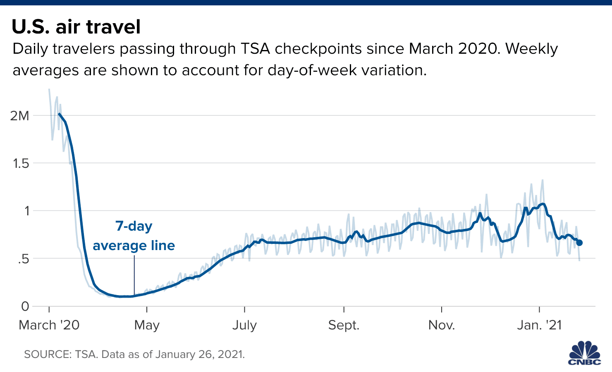

O impacto da pandemia nas viagens aéreas dos EUA
Uma análise da evolução diária de passageiros nos aeroportos americanos entre março de 2020 e janeiro de 2021.
Visualização original — CNBC
O gráfico original apresenta a evolução diária do número de passageiros que passaram pelos pontos de segurança dos aeroportos dos Estados Unidos, entre março de 2020 e janeiro de 2021, destacando a média móvel de 7 dias.

Redesign 1 — Queda e recuperação do movimento aéreo
Evolução do movimento de passageiros em relação à média móvel de 7 dias registrada em 01/03/2020, utilizada como referência de 100%. Valores menores indicam movimento inferior ao observado nessa data.
Redesign 2 — Mapa de calor temporal
Distribuição diária do número de passageiros nos aeroportos americanos. Cada célula representa um dia, e a intensidade da cor indica o volume de passageiros.